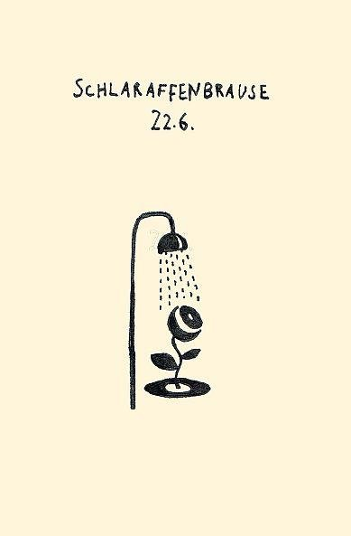
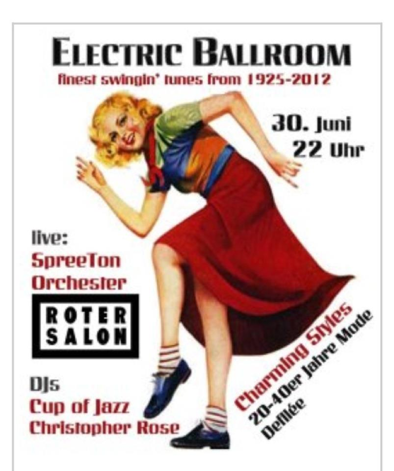

Hier ein schöner TAZ Artikel übers Swingtanzen. Lesen:
Swing Tanzen gehen: Starker Rhythmus, viel Bewegung
[via Mariano, thx!!]
Hier ein schöner TAZ Artikel übers Swingtanzen. Lesen:
Swing Tanzen gehen: Starker Rhythmus, viel Bewegung
[via Mariano, thx!!]
Sommerpause heisst nicht Sommerloch! Im B-Swingt geht’s das Kursangebot mit einigen Workshop specials weiter:
14. Juli: How to be an Awesome social dancer
15. Juli: Lindy Hop Beginner Workshop
21. Juli: West Coast Swing Beginenr Workshop
22. Juli: Spin & Turn Technique Workshop
jeweils von 12:00 – 16:00, 36 Euro pro Workshop
Und das Finale am 28/29 Juli:
Internationaler Balboa & Laminu (Slowbal) Workshop
mit Dan & Gemma (London) und Claire & Ralf (DE)
10Stunden Workshop uebers Wochenende
Mehr Info: www.b-swingt.de bzw. info@b-swingt.de
Schnell Anmelden und Tanzen!
Date/Time
Date(s) - 14. 07. 2012.29. 07. 2012
All Day
Location
B-Swingt Berlin

Schönes Projekt von ‚Stiftung Freizeit‘: Labplatz – Dance Floor!
Ein Parkplatz wurde schnell zu einer Tanzfläche aufgerüstet und kräftig ‚bedanced‘ – Yay!
LABPLATZ wants to rethink urban space and raise awareness about the use of public space in our cities.
We invited friends and neighbors to share their ideas and join us in a day of transforming parking spaces. And yes, like any other car, we paid the parking fee!
http://www.stiftungfreizeit.com/2012/07/labplatz-dance-floor.html
Schönes Swing Cover Stück und schönes Video von The Lost Fingers
Auf der Website der Lost Fingers gibts noch mehr Audio und Video Material: http://www.thelostfingers.com/
Kein Abend (nur) mit deutschen Schlagern! Wir erinnern uns eines Allround-Künstlers wie es ihn heute nicht mehr gibt: bekannte und weniger bekannte Stationen seines Lebens werden präsentiert und auch viele seiner berühmten Film-, Musikpartner und Showgäste. Bewegte Bilder und Tanz runden den Abend ab.
Eine Hommage an ein deutschsprachiges Ausnahmetalent, der mit Witz, Charme und stilvoller Komik sein Publikum zu gewinnen und fesseln wusste.
Musikalisch unterstützt werden wir von DJ Grammophon, der in seiner Schellackplatten-Aufleger-Karriere nicht allzu oft Gelegenheit hat, seine ganzen Peter Alexander-Titel zum Besten zu geben.
Eintritt: 10,00 EUR
Date/Time
Date(s) - 07. 07. 2012
19:00 - 23:59
Location
Ballsaal Friedrichshagen im Bräustübl
Balboa für Fortgeschrittene (3. Folgekurs in Friedrichsagen)
4 Termine Montags, 20-21:30 Uhr: 23.07./30.07./13.08./20.08.
Souterrain der Weißen Villa, Josef-Nawrocki-Str. 10, 12587 Berlin
Voraussetzung für die Teilnahme sind folgende Kenntnisse:
– Balboa Grundschritt
– paddles / paddle turn
– break turn
– lollies / half time lollies / slides
– swivels (wird wiederholt)
– crab walk (wird wiederholt)
– toss out
40,00 EUR/Person (zahlbar komplett am ersten Abend)
Anmeldung/Fragen bitte per email an isabelladrischel@aol.com
Date/Time
Date(s) - 23. 07. 2012
20:00 - 21:30
Location
Restaurant Weiße Villa

Auch dieses Jahr heisst wieder fusionieren und auch wieder ist das (Swing) Angebot ein musikalischer Traum.
Ich freu mich auf Django Lassie an der Swing-Fiedel und natürlich The Movits! mit schwedischen Swing-Beats! Die Franzosen Oncle Strongle bringen Garage Swing mit, Reverend Shine Snake Oil Co und die Carny Villains aus Bristol werden uns mit Gypsy Swing beglücken. Daumen Drück Sonne und Freu freu!
Alle Bands im Überblick:
http://www.fusion-festival.de/de/2012/festival/band/
Oh Ha, schönes Ding von unser’n Berlinern Daniel & Claire:

Kinners, heute könnt ihr inne Tanzbar Pre-NinJammen, aber dat käm fast dem EM Schaun gleich – da real party-tanz-gesausse ist hier:
Ladies and Gentelmen, after 5 years of Raus-Aus-KL, I’m proud to present:
Froh! Froh! Frohlocker. in Berlin.
Die Schlaraffen bitten zum Tanz im zweiten Hinterhaus der Kienitzer 98.
Mit dem virtuosen Bassbrasselekrtobreakbeatkollektiv FROHLOCKER aus Kaiserslautern. Dazu mehr Blechblas&Bass-Hybride von den DJs Poeks, Schmeckefuchs und ilinx*
Mehr Antrieb für die Beine kommt vom gefährlichen ELECTRONIC SWING ORCHESTRA aus Berlin!
Special Guests aus Argentinien: Atenti Pebeta Trío!
ACHTUNG Ausnahme: Live-Acts spielen 10:00PM pünktlich!!! (Ihr könnt auch schon etwas vor 10 kommen)
https://www.facebook.com/events/283192825107317/
http://www.residentadvisor.net/event.aspx?364048
Date/Time
Date(s) - 22. 06. 2012
22:00
Location
K98
Yay heute ist der längste Tag im Jahr. Somit raus auf die Strasse und den Berliner Midsommar feiern: Fete de la Musique.
Swing gibts u.a. In der Kulturbrauerei / Frannz Club, Badehaus, ZLB, Kuchenkaiser
Nicht.Verpassen.
http://fetedelamusique.de/
Date/Time
Date(s) - 21. 06. 2012
All Day

Electric Ballroom – finest swingin‘ tracks from 1920 – 2012
live:
Das SpreeTONorchester
DJ Cup of Jazz
DJ Christopher Rose
Charming Styles – 40er Jahre Mode – Defilée
www.roter-salon-berlin.de
Date/Time
Date(s) - 30. 06. 2012
22:00
Location
Roter Salon
Jaja, die gute alte Alanis – die kann auch swing:

Geheimtipp – unbedingt machen!!
Balboa Workshops am Badesee 15.-17. Juni
1. Balboa Swing Basics / Refresher – mit Matti und Anna
2. Intermediate / Advanced Balboa Workshop – mit Tycho und Susana
Details & Anmeldung hier: http://balswing.de/badesee/registration_Juni.htm
Date/Time
Date(s) - 15. 06. 2012.17. 06. 2012
All Day
Location
Kleiner Wukensee
[vimeo]http://vimeo.com/41418511[/vimeo]
OMG – Die Kings of Electro Swing kommen nach Berlin:
Amüsement der besonderen Art bieten der ELECTRO SWING CLUB und KALLIAS am 15.6. im Festsaal Kreuzberg. Nach zweijähriger Abwesenheit stellen wir die Franzosen von CARAVAN PALACE auf die Bühne, im Gepäck haben sie auch gleich ihr neues Album „Panik“. – Es kocht im Festsaal, die Nacht wird lang.
Gesamtes Line-Up:
Caravan Palace
Alle Farben
Shemian
Jan Pyroman
Natanael Megersa
DJ Impulse
Tickets gibt es im VVK unter: www.kallias.info/tickets
Einlass 19.30 Uhr, Caravan Palace Konzertbeginn um 00.00 Uhr, ab 1 Uhr kosten die Tickets nur noch 10 Euro http://www.facebook.com/events/395762107123047/
Date/Time
Date(s) - 15. 06. 2012
19:30
Location
Festsaal Kreuzberg
{kind=link}
{kind=link}